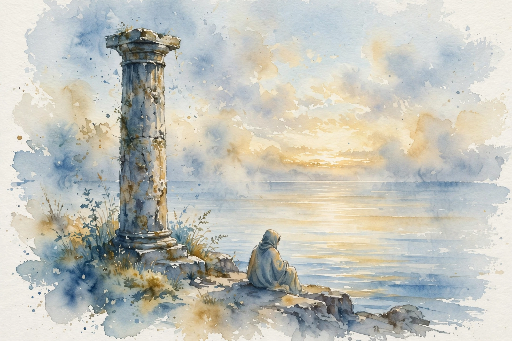

The Knowledge Project · Episode 4 · Companion
William Irvine
William Irvine brings Stoicism down to earth: negative visualization, the trichotomy of control, and a five-second rule for anger. This companion follows the full episode and pulls out the practices for a tranquil life.

Illustration. The Stoic scene. Irvine practices an ancient philosophy for modern tranquility. AI-generated watercolor made for this page.
Watch. The official episode video. Use the chapter menu above to jump to any section of this companion as you listen.
The Wisdom Index: every nugget in this companion
Part 1
Negative Visualization
Irvine opens with his favorite Stoic technique. Close your eyes and imagine losing your sight for two minutes. Then open them. The room looks new.
Negative visualization means rehearsing loss before it happens. Picture the car gone, the job gone, the health gone. When the picture ends, the ordinary world returns as a gift instead of a background.
Nugget 1 · Gratitude
Rehearse loss to feel gain
What happened. Irvine guides the listener through a two-minute blindness exercise. Sight returns as a surprise.
Why it matters. We adapt to every good thing until it turns invisible. Deliberate loss reverses the adaptation.
The principle. Imagine losing what you rely on, briefly and on purpose. What returns will feel like a gift.
Part 2
The Trichotomy of Control
The Stoics taught the dichotomy of control: some things are up to us, some are not. Irvine upgrades it to a trichotomy. Some things we control fully. Some we influence partly. The rest we cannot touch.
The upgrade matters because the middle zone is where most of life happens. You cannot control whether the team wins, but you can control your training. Aim your effort at the first two zones and release the third.
Three zones of control
A visual model of the trichotomy. No numbers, just the map.
Source: episode transcript. Irvine extends the Stoic dichotomy of control into a trichotomy.
Nugget 2 · Control
Spend effort only where it lands
What happened. Irvine sorts every worry into three zones: full control, partial influence, and none.
Why it matters. Most anxiety lives in the third zone, where effort changes nothing and worry changes no effort.
The principle. Act in the first two zones. Release the third on purpose, not by exhaustion.
Part 3
The Five-Second Rule
Anger gives you five seconds. Irvine notices the first smoldering signs, then reframes within five seconds. After that the flame takes over and reason leaves the room.
His analogy is a broken water pipe. The pipe is the setback. The flood is your response. You cannot unbreak the pipe, but you can decide whether the house floods. The response is the part you own.
Five seconds to reframe
Hover any segment for detail.
Source: episode transcript. Irvine says he has five seconds to reframe anger before it bursts into flame.
Part 4
Insults and Anti-Mentors
Irvine collects anti-mentors: people whose behavior teaches by negative example. Watch them closely and you learn exactly who not to become.
For insults he prescribes no response at all. If they repeat it, his line ends the exchange:
yeah i heard you the first time
William Irvine on handling insults, in the episode
Then walk on. The insult only works if you supply the reaction. Refuse the supply and the trade collapses.
Part 5
The Psychological Immune System
Comfort weakens the mind the way sterile rooms weaken the body. Irvine cites the medical advice that a child should eat a pound of dirt: small exposures build the system. He argues the psyche works the same way.
pound of dirt
William Irvine, citing the official medical advice on children
He calls himself a fan of failure. He once rowed a race and finished last, and he loved it. Coming last still beat the approximately seven and a half billion people who never reached the starting line.
Last place still beats 7.5 billion
Hover any bar for detail.
Source: episode transcript. Irvine says last place beat the roughly 7.5 billion who did not show up.
Nugget 3 · Resilience
Seek small doses of failure
What happened. Irvine finished last in a rowing race and counted it a win, because showing up beat the billions who stayed home.
Why it matters. A mind shielded from all failure has no immune response when real failure arrives.
The principle. Take small, survivable losses on purpose. They vaccinate you against the big ones.
Part 6
The Treadmill and the Tombstone
The hedonic treadmill keeps us running. Each gain feels fine for now, until the mind adds one more condition: if only I had something better. The finish line moves with every step.
Stoicism began with Zeno of Citium around 300 BC, and Irvine sees a modern renaissance of the school. The promise is not wealth but tranquility: wanting less instead of earning more.
Asked what he wants remembered for, he answers with three words: husband, father, teacher. No books, no titles. Just the roles that mattered.
Takeaways
- Rehearse loss on purpose. What returns will feel like a gift.
- Sort every worry into three zones. Act in two, release the third.
- You get five seconds on anger. Reframe inside the window.
- Take small failures voluntarily. Last place still beats never starting.